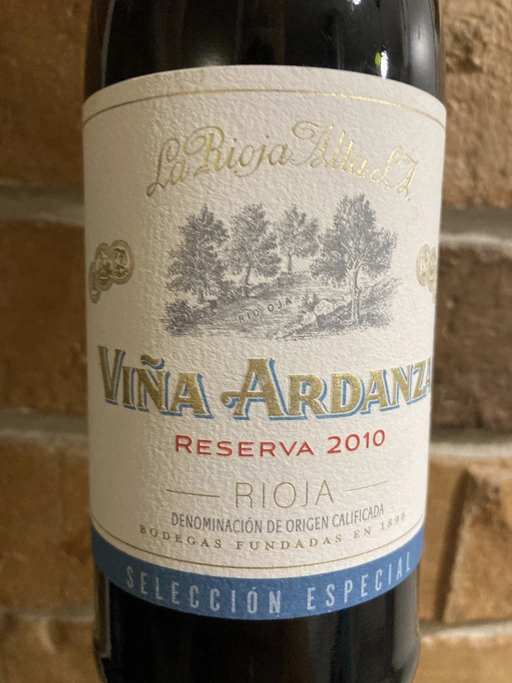

- Type
- Red Still, Dry
- Producer
- La Rioja Alta
- Vintage
- 2010
- Location
- Spain, Rioja DOC
- Grapes
- Tempranillo, Grenache
- Alcohol
- 13.5
- Sugar
- 1.7
- Price
- 985 UAH
- Cellar
- N/A
Ratings
2020-11-10 - 8.00
Viña Ardanza is an important wine in my life (a story for another time), so I was very happy to enjoy it. Classical Rioja style, prune, spices, vanilla, sour cherry, humidor. Already feels old, good acidity, silky tannins. Well, it is very well made wine despite the mass production :)